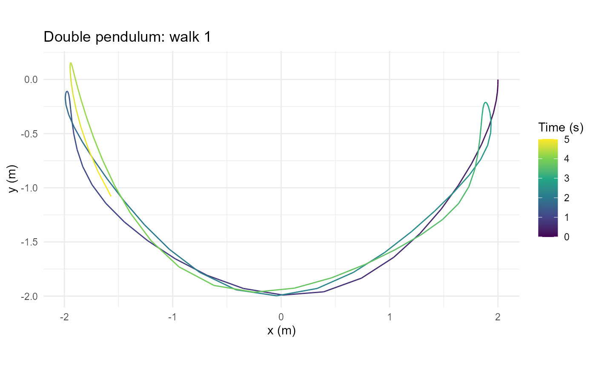
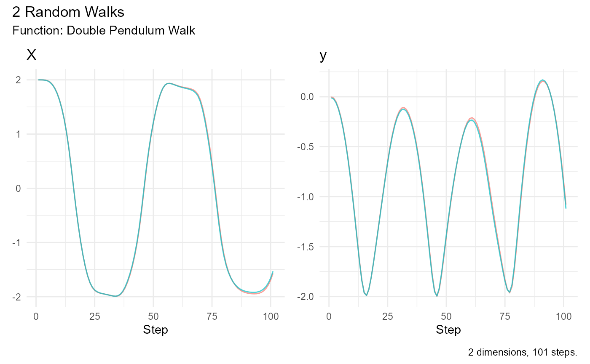

Model and units
double_pendulum_walk() models two point masses joined by
rigid, massless rods in a vertical plane. There is no friction or
external forcing. Independent normal perturbations of the initial angles
create an ensemble of trajectories; after initialization, motion is
deterministic. This is not a random-waiting-time walk. Large-angle
motion can be chaotic, so small starting differences can grow.
Angles are in radians from downward vertical, angular velocities in
radians per second, lengths in meters, masses in kilograms, and time in
seconds. Both angles are absolute. The pivot is (0, 0) and
positive y points upward.
The optional deSolve package is required for simulation.
Install it yourself before running these examples if it is unavailable.
Plotting uses ggplot2; animation additionally uses
gganimate, and GIF rendering uses gifski.
Repeatable trajectories
set.seed(287)
walks <- double_pendulum_walk(.num_walks = 2, .n = 101)
head(walks)
#> # A tibble: 6 × 11
#> walk_number step_number time theta1 theta2 omega1 omega2 x1 y1
#> <fct> <int> <dbl> <dbl> <dbl> <dbl> <dbl> <dbl> <dbl>
#> 1 1 1 0 1.59 1.56 0 0 1.000 0.0145
#> 2 1 2 0.05 1.57 1.56 -0.490 -0.0000959 1.000 0.00223
#> 3 1 3 0.1 1.54 1.56 -0.981 -0.000333 0.999 -0.0345
#> 4 1 4 0.15 1.48 1.56 -1.46 -0.0114 0.995 -0.0956
#> 5 1 5 0.2 1.39 1.55 -1.92 -0.0628 0.984 -0.180
#> 6 1 6 0.25 1.28 1.55 -2.33 -0.203 0.959 -0.283
#> # ℹ 2 more variables: x <dbl>, y <dbl>
attr(walks, "initial_states")
#> theta1 theta2 omega1 omega2
#> [1,] 1.585287 1.555304 0 0
#> [2,] 1.564327 1.566868 0 0.n counts observations, including time zero. With
.n = 101 and the default .delta_time = 0.05,
the final observation is at five seconds. The default 401 observations
cover 20 seconds. Sampling intervals do not constrain the adaptive
solver’s internal integration steps.
x1, y1 locate the first bob;
x, y locate the second. These are positions,
not increments, so the generator does not add cumulative statistics.
fixed <- double_pendulum_walk(.num_walks = 2, .n = 21, .angle_sd = 0)Zero angle noise produces identical trajectories for identical
initial states and does not consume random numbers. Set
.theta1, .theta2, .omega1, and
.omega2 to choose other starts; masses, lengths, and
gravity are configurable.
Plot and summarize
plot_double_pendulum(walks, .walk = 1)
The spatial plot shows the second bob’s path, with equal axis scaling
and color for elapsed time. .walk selects a walk label, not
its position in the data.
summarize_walks(walks, .value = x)
#> # A tibble: 1 × 17
#> fns fns_name dimensions obs mean_val median range quantile_lo quantile_hi
#> <chr> <chr> <int> <dbl> <dbl> <dbl> <dbl> <dbl> <dbl>
#> 1 doubl… Double … 2 101 -0.176 -0.648 3.99 -1.98 2.00
#> # ℹ 8 more variables: variance <dbl>, sd <dbl>, min_val <dbl>, max_val <dbl>,
#> # harmonic_mean <dbl>, geometric_mean <dbl>, skewness <dbl>, kurtosis <dbl>
visualize_walks(walks, .pluck = c("x", "y"))
visualize_walks() shows coordinate traces against step
number. Signed coordinates can produce undefined geometric means in the
existing summary function; those statistics are not changed by this
generator.
Animate and save a GIF
Construction returns a customizable gganim object and
does not render or save files. Each sampled observation becomes a frame
with both rods, bobs, a pivot, elapsed time, and the second bob’s recent
trail. Set .trail_length = 0 to hide the trail; otherwise
it counts positions including the current observation.
The following rendering example is intentionally not run during vignette builds:
animation <- animate_double_pendulum(walks, .walk = 1, .trail_length = 30)
gif <- gganimate::animate(
animation,
nframes = attr(walks, "n"),
fps = 1 / attr(walks, "delta_time"),
width = 500, height = 500,
renderer = gganimate::gifski_renderer()
)
gganimate::anim_save("double-pendulum.gif", animation = gif)Use every sampled observation and the reciprocal sampling interval as the frame rate to preserve simulated timing. Changing the frame rate changes playback speed. The display uses discrete states with fixed spatial limits and no tweening.
Numerical model
The implementation uses LSODA with relative and absolute tolerances
of 1e-9. The equations follow the double-pendulum
derivation with angle difference theta1 - theta2. This
corrects the reversed difference in the original
reference script. Long chaotic trajectories should not be
interpreted as exact forecasts.